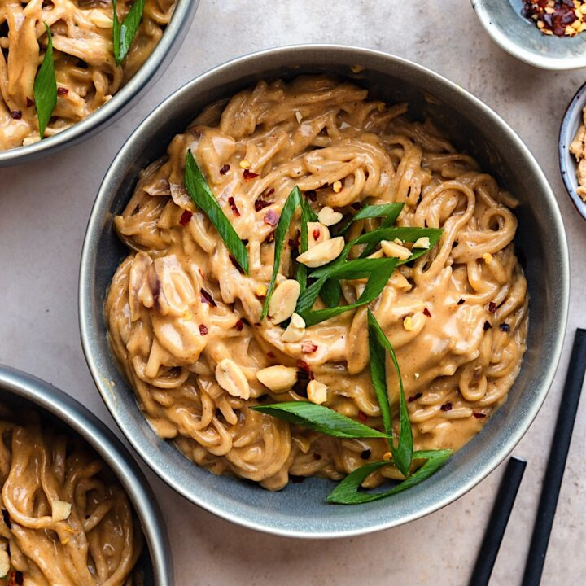

Satay Noodles

Description
If there is one easy, quick weeknight meal I regularly make, its noodles.
And creamy peanut sauce is one of my all time favs.
Its funny, because I used to hate peanut butter (and most nuts in general)
and now I dont know how I could live without them.
The peanut butter and coconut cream make for the most velvety, sweet and
totally addictive satay sauce. I am almost certain you will be going in for seconds, and thirds.
Ingredients
Peanut Sauce
- 1 Red Onion
- 1 tsp Light Brown Sugar
- 1/4 cup Smooth Peanut Butter
- 1 tin Coconut Milk
- 2 tbsp Soy Sauce
- 1 tbsp Maple Syrup
- 1 tsp Dried Chilli Flakes
- 1 tsp Ground Ginger
Everything Else
- 2 Carrots
- 1 Red Pepper
- 125g Chestnut Mushrooms
- 140g Wholewheat Noodles
Steps
- Thinly slice the onion and fry in vegetable/coconut oil on medium heat. Once translucent,
add the sugar and turn down the heat. Stir and cook until sticky and caramalised.
- Add the peanut butter, soy sauce, maple syrup, ginger and chilli.
You can omit the chilli or add less if you don't want the spice.
- Stir and then add the cream from the tin of the coconut milk a tbsp at a time. Turn back
up the heat so it is gently simmering. You will end up using all of the cream from the
coconut milk, add a little of the water if you want a thinner consistency.
- Meanwhile, fry the vegetables in a separate pan. Start with the carrots, then add the
peppers and lastly the mushrooms. If you are adding tofu or seitan you may want to fry
in a separate pan and then add to the vegetables.
- Boil some water in a saucepan and add the noodles. Cook according to packet instructions.
I use wholewheat noodles that take 5 minutes.
- Once cooked, drain and put the noodles back in the saucepan. Add the satay sauce and stir
until all the noodles are coated. Lastly, add the veg and stir.
- Serve and top with extra chilly, soy sauce, and chopped scallions.
Main Page